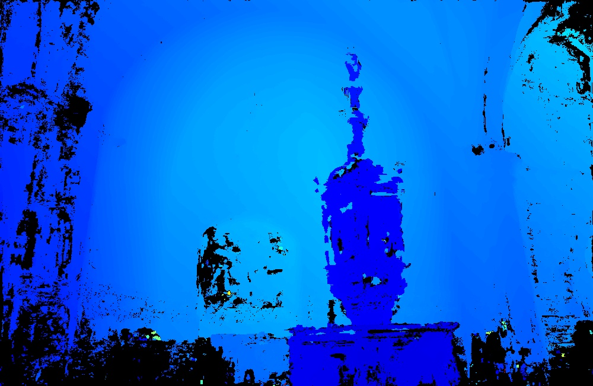
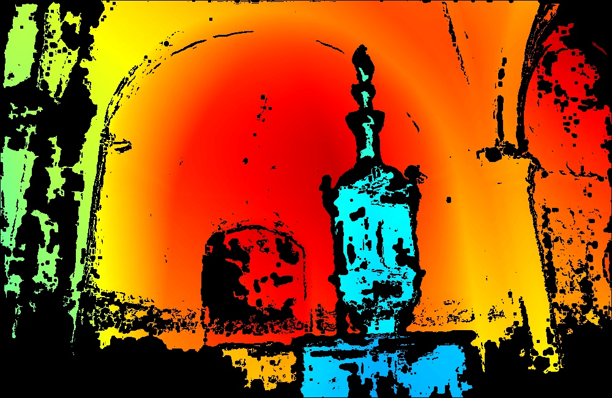

0: Start from the SfM reconstruction.
SfM reconstruction
TL;DR: Toward general 3D foundation models, we go beyond densely captured imagery to learn from the long tail camera distribution of Internet photo collections. We introduce MegaDepth-X, a large-scale dataset with high-quality 3D supervision, together with sparsity-aware sampling during training, to make the learning possible.
Internet photo collections exhibit an extremely long-tailed distribution: a few famous landmarks are densely photographed and easily reconstructed in 3D, while most real-world sites are represented with sparse, noisy, uneven imagery beyond the capabilities of both classical and learned 3D methods. We believe that tackling this long-tail regime represents one of the next frontiers for 3D foundation models. Although reliable ground-truth 3D supervision from sparse scenes is challenging to acquire, we observe that it can be effectively simulated by sampling sparse subsets from well-reconstructed Internet landmarks. To this end, we introduce MegaDepth-X, a large dataset of 3D reconstrucions with clean, dense depth, together with a strategy for sampling sets of training images that mimic camera distributions in long-tail scenes. Finetuning 3D foundation models with these components yields robust reconstructions under extreme sparsity, and also enables more reliable reconstruction in symmetric and repetitive scenes, while preserving generalization to standard, dense 3D benchmark datasets.
Learning in the long-tail regime requires high-quality 3D supervision derived from Internet photo collections. Our data pipeline combines MASt3R-SfM together with Doppelgangers++, which reconstructs ambiguity-heavy scenes more reliably than COLMAP, especially under repetitive structures and challenging viewpoint distributions. We then run multi-view stereo (MVS) with COLMAP to obtain dense depth maps, followed by post-processing to further refine depth quality.

We also manually verify reconstructed scenes against external references (e.g., Google Maps and Google Earth), and discard any scene that does not align with the corresponding bird's-eye-view geometry.

After this filtering stage, we eventually curate MegaDepth-X, which is substantially larger than the commonly used in-the-wild reconstruction dataset, MegaDepth.
We further refine MVS depth maps to mitigate depth bleeding (where background depths leak into foreground regions), and to reduce inconsistent or noisy estimates in areas affected by transient objects, such as people, cars, or seasonal vegetation changes.


We simulate long-tail scene conditions by sampling sparse views from dense SfM reconstructions. Following the paper, the sampling process is designed to satisfy three requirements: The sampled views should cover a wide range of viewing directions, ensuring that emulated scenes span diverse visual perspectives. , The selected views should be far enough apart to mimic the wide baselines typical of long-tail scenes, e.g. loosely connected views or views from disconnected scene components, encouraging the model to learn robust geometric priors rather than relying on dense feature matches. , and Despite the sparsity, views within each sampled scene component should retain enough covisibility to remain locally reconstructable, since zero-overlap samples within a scene component can lead to unstable training signals and difficult optimization. . The examples below show sampling procedures for a mini batch of 24 views.
We compare pretrained baselines and sparse-aware finetuned models for both π³ and VGGT on our curated evaluation set with two difficulty levels (easy and hard). Overall, finetuned models consistently outperform their pretrained counterparts, with larger gains on harder, sparser scenes. Metric definitions and evaluation protocol follow π³.
| Difficulty | Method | Camera Pose Estimation | Point Map Estimation | ||||
|---|---|---|---|---|---|---|---|
| RRA@5↑ | RTA@5↑ | AUC@5↑ | Acc Mean↓ | Comp Mean↓ | NV Mean↑ | ||
| easy | pretrained π³ | 88.97 | 68.79 | 45.84 | 0.055 | 0.039 | 0.712 |
| finetuned π³ | 95.64 | 76.85 | 55.58 | 0.035 | 0.024 | 0.724 | |
| pretrained VGGT | 84.17 | 58.47 | 35.32 | 0.093 | 0.055 | 0.695 | |
| finetuned VGGT | 92.41 | 71.12 | 48.78 | 0.050 | 0.033 | 0.719 | |
| hard | pretrained π³ | 75.31 | 59.16 | 36.93 | 0.101 | 0.133 | 0.689 |
| finetuned π³ | 86.40 | 71.00 | 47.93 | 0.068 | 0.066 | 0.713 | |
| pretrained VGGT | 70.98 | 52.98 | 29.10 | 0.149 | 0.151 | 0.675 | |
| finetuned VGGT | 81.07 | 65.59 | 41.49 | 0.089 | 0.084 | 0.709 | |
In this section, we show model predictions on randomly selected long-tail scenes from the MegaScenes dataset, where COLMAP fails to register any images. We present 18 scenes in total, with 2 scenes per page.
For each scene, we show input images, multi-view renderings from pretrained π³ and ours, and Google Earth top-down reference in a single row. Note For a fair comparison, pretrained π³ and ours use the same confidence threshold in each scene. We also discard predicted camera views that contain too many low-confidence pixels.
As shown in the results, our method predicts denser reconstructions and is more robust than the pretrained model in sparse-view scenes, textureless environments, lighting variations, doppelganger ambiguities, and noisy input batches.
This work was supported in part by the Institute of Information & Communications Technology Planning & Evaluation (IITP) grant funded by the Korean Government (MSIT) (No. RS-2024-00457882, National AI Research Lab Project). We thank Joseph Tung, Yiwen Zhang, Hanyu Chen and Haian Jin for discussion and help with MegaScenes dataset and depth post-processing.
@inproceedings{li2026longtail,
title={Long-Tail Internet Photo Reconstruction},
author={Li, Yuan and Xiangli, Yuanbo and Averbuch-Elor, Hadar and Snavely, Noah and Cai, Ruojin},
booktitle={Proceedings of the IEEE/CVF Conference on Computer Vision and Pattern Recognition},
year={2026}
}
Reference: Website template reference: Nerfies.